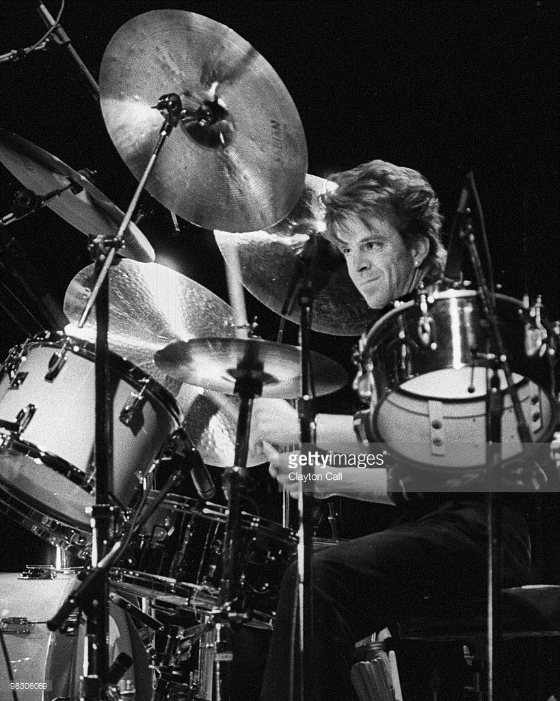
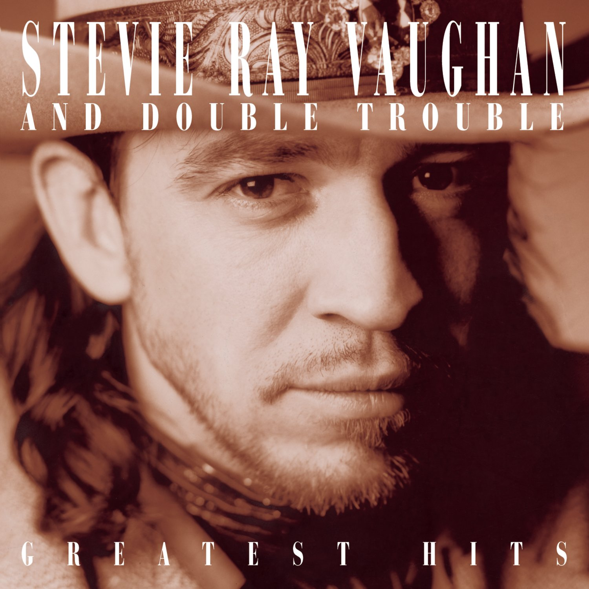
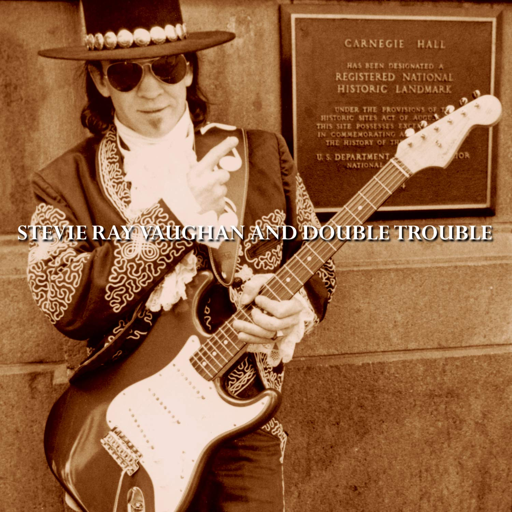
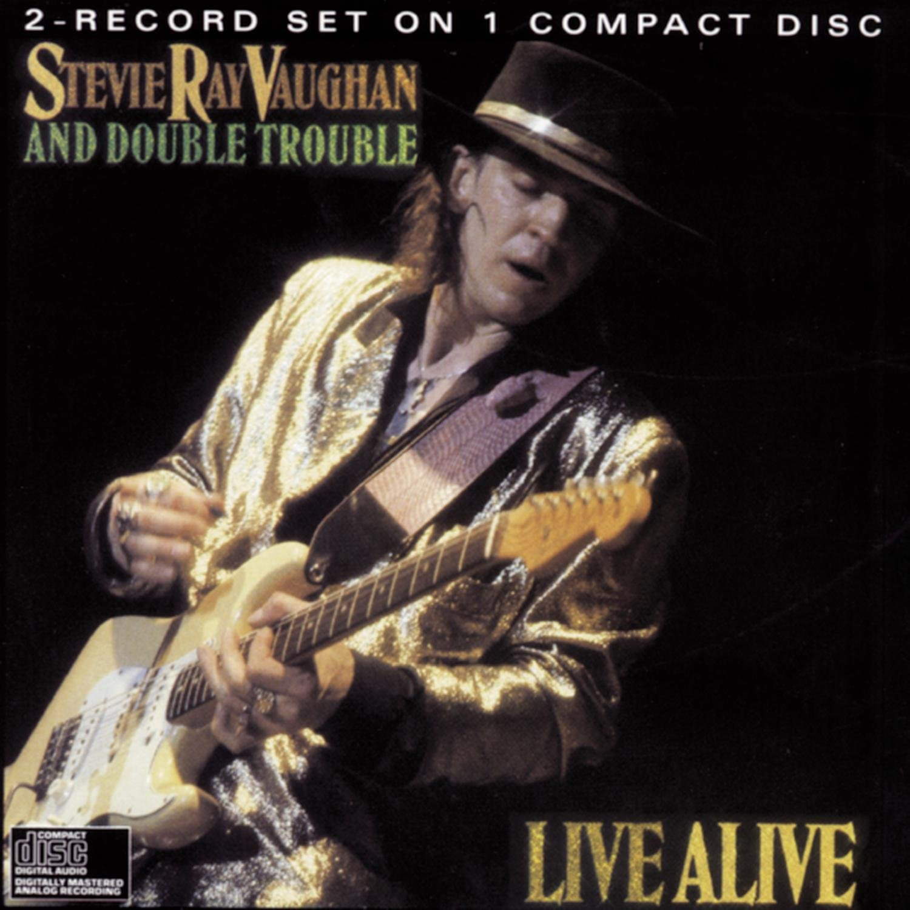

Band Members
|  | ||||||
| Stevie Ray Vaughan | Chris Layton | Tommy Shannon | Reese Wynans | |||
| Guitar and Vocals | Drums | Bass Guitar | Keyboards |
Information
Stevie Ray Vaughan's success brought a reawaking of the blues. He was able to produce a tone out of his guitar that musicians admired and many desired. He achieved this by using strings with a thicker gauge. In his era musicians were using gauges of .008, .009, and .010. He was using .013s. At times he would go up as large as .017. This is very tough on the fingertips and requires great finger strength. Since Stevie's passing in August of 1990, the band occasionally gets together with Stevie's older brother Jimmy at the helm. With the bands lack of an active presence in the music scene since Stevie's passing, they missed out on the age of internet and band websites. However, here is a link to their Wikipedia page.
I remember getting my first Stevie Ray Vaughan CD. I was in the process of signing up for Columbia House. I had my sheet of stamps and was picking out my free CD's. I was having a hard time choosing enough to fulfill the deal. My father knowing I was really into classic rock saw Stevie Ray Vaughan's Greatest Hits and suggested I give it a try. I thought why not it's free. When I received the CD, I was totally blown away. His fast-paced blues rock was like nothing I had ever heard before. The way he played guitar rocked me to my core. I couldn't find a song on the album I didn't like. Hits like Texas Flood, The House is Rockin', and Pride and Joy. When I heard his cover of Jimi Hendrix's Little Wing I thought, "If this guy can cover Jimi's song like that, he must be the real deal!" The next album I purchased was Live at Carnegie Hall. This album introduced me to his song Lenny. One of my favorites. It is an instrumental S song written for his wife Lenora Darlene Bailey. It also featured great songs like Love Struck Baby, Cold Shot, and an excellent live version of Pride and Joy. The last album I purchased by Stevie was Live Alive. This album was packed with hit songs. Including awesome covers of Stevie Wonder's Superstition and Jimi Hendrix's Voodoo Child. Stevie Ray Vaughn had a big impact on Rock and Blues. I can't imagine what else he would have created if he was still with us.
Favorite Albums
|  |  |  | ||
|
|
|